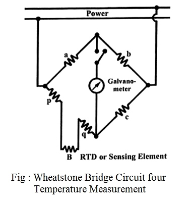

Q.12 What is the principle of working of RTD. Explain.
RTD के कार्य करने का तरीका बताइए।
Ans: Resistance Thermometers (RTDs) – The metallic electrical resistance thermometer works on the principle that the resistance of metals varies in a reproducible manner with temperature. The variation of resistance R with temperature T(K) for most of the metals is given as,
R= R0[1 + aT + bT2]
where R= Resistance at absolute temperature T
R0 = Resistance at 0°C
a and b = Constants.
The range of temperature over which above equation is valid depends upon the temperature coefficient of metal, chemical inertness and its crystal structure which should not undergo permanent changes within this range.
Metallic resistance thermometers (or RTDs) are constructed in many forms, but the temperature sensitive element is usually in the form of a coil of fine wire supported in a stress free manner. The wire is wrapped around an insulating support constructed of glass, ceramic or mica. The mounted element is then provided with a protective enclosure. The ends of the coils are welded to stiff copper leads that are taken out to be connected in one of the arms of the Wheatstone bridge circuit. This arrangement is then covered in a protective metal sheath to provide rigidity and mechanical strength.

Working - The change of temperature, causes the change in resistance of the sensing element, which can be detected by means of a Wheatstone bridge. The Wheatstone for bridge consists of resistive arms with a source of e.m.f. (a battery) and a meter which acts as a detector. The detector is usually a current sensing galvanometer. It may employ either the deflection mode of operation or the null mode. Fig. shows the arrangement. The sensing element (B) is made of a material having high temperature coefficient and resistance a, b and c are made of material whose resistance is practically constant under normal temperature changes. When no current flows through galvanometer, the ratio of resistances according to the principle of Wheatstone bridge,
a/b = B/c
In normal practice, sensing element is away from the galvanometer, therefore, its leads will have resistance say p and q, thus the above relation will be
a/b = B + p + q / c
Now due to flow of current, the self-heating produced in RTDs alters the temperature of the element and hence the resistance. In this condition, the above stated balances cannot be maintained and the galvanometer will show deflection which can be calibrated to give a suitable temperature scale. This is known as deflection Wheatstone bridge.
Deflection type of bridge is used for rapidly changing temperatures, and null type bridge is used for static or slow varying temperatures.